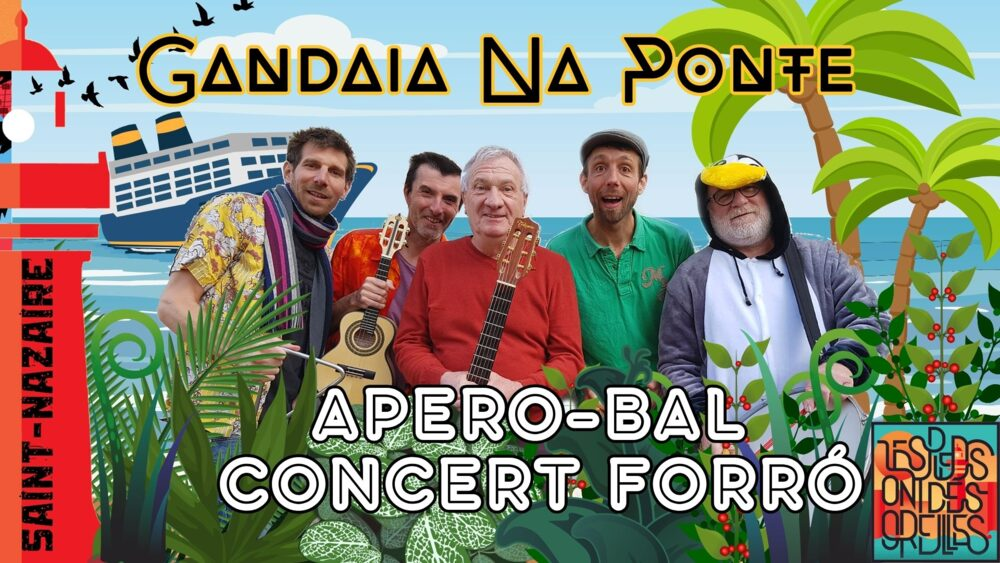

Forró et Gandaia na Ponte au Bar Bar

Lieu : La Bodeguita, Saint-Nazaire
Concert et bal forró avec Gandaia na Ponte, dans le cadre du festival Culture Bar Bar.
Gandaia na Ponte, ou « le bazar sur le pont », est un groupe nazairien de forró : guitare, zabumba, cavaquinho, triangle, pandeiro, chant et chœur. Gratuit.